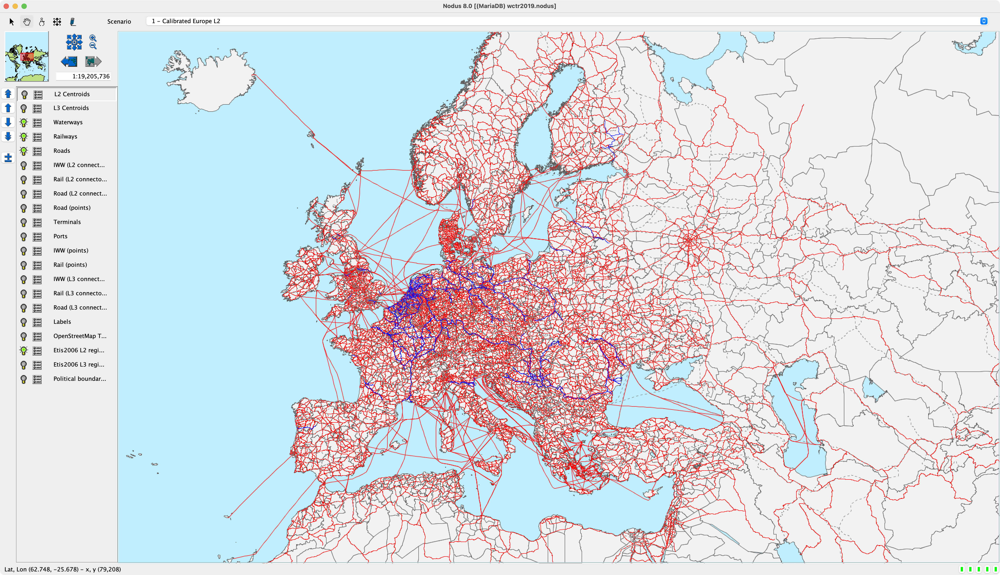
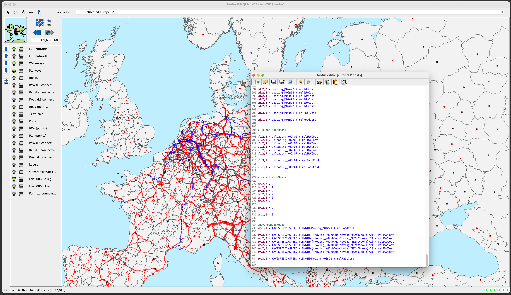
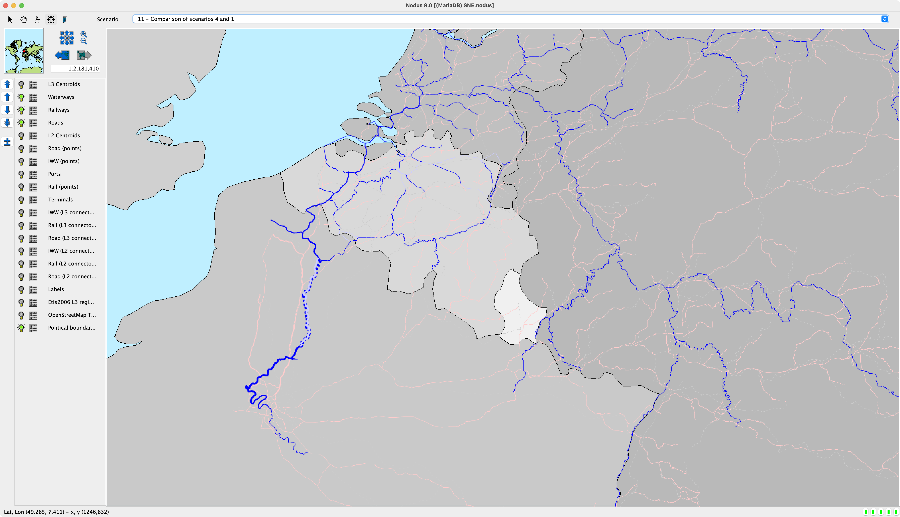
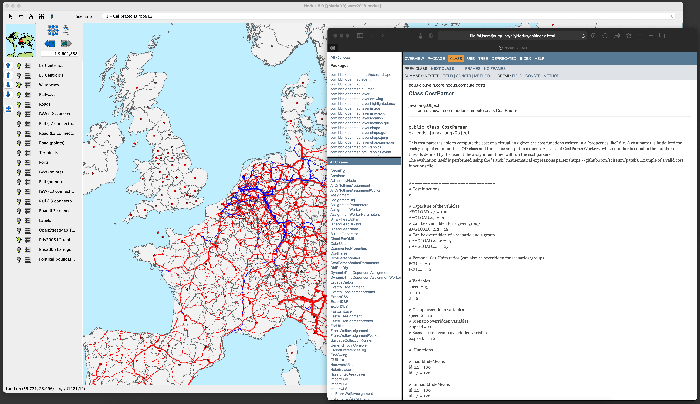
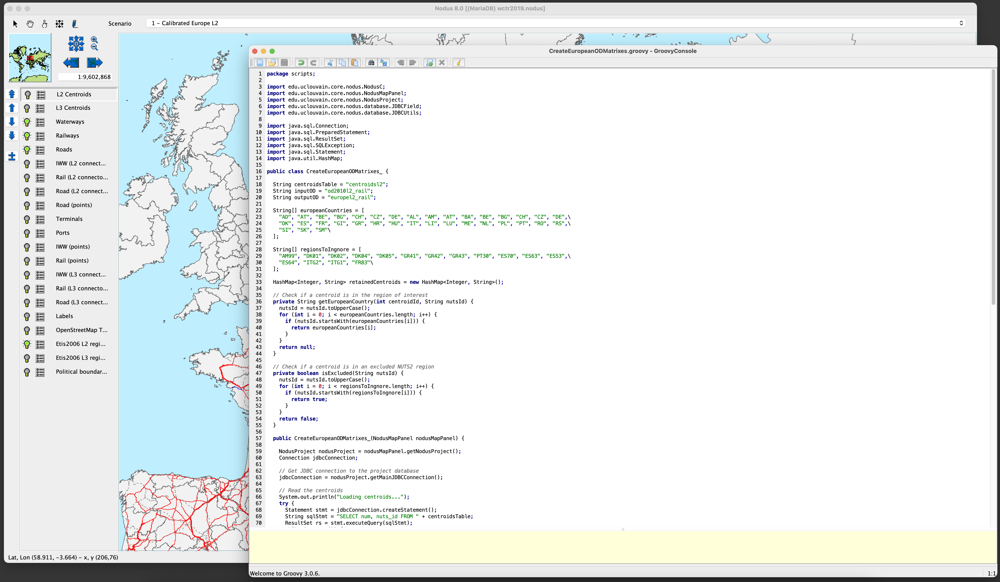

Copies d'écrans
Voici quelques copies d'écrans (Linux, Mac OSX et Windows) qui
montrent Nodus en action.
Fenêtre principale avec un projet
basé sur les réseaux ETISPlus
Dans ce projet, la base de données ETISPlus (réseaux et matrices
origines-destinations) a été utilisée.

Editeur de fonctions de coûts
Les réseaux sont ici superposés à un fond de carte provenant
d'un serveur
OpenStreetMap
(tuiles).

Console SQL
Statistiques compilées à partir de
la base de données
Un certain nombre de statistiques peuvent être obtenues à
l'aide de requêtes SQL (générées automatiquement) et affichées
sous forme de diagrammes.
Comparaison de scenarios
Dans cette copie d'écran, deux scénarios sont comparés : les
voies navigables en bleu clair représentent une diminution du
trafic alors que le bleu foncé matérialise une augmentation.

Details du réseau virtuel généré
pour un centroïde
Les détails du réseau virtuel généré pour un arc ou un noeud
réel peuvent être récupérés à l'aide de requêtes SQL (générées
automatiquement) et visualisés dans un graphe. Cet écran montre le
réseau virtuel pour un centroïde donné après une affectation.
API documentée
Le code source Java de Nodus est disponible et son API
complètement documentée.

Console Groovy pour les scripts
L'API peut être appelée pour le développent de plugins ou de
scripts spécifiques. Pour ces derniers, le langage
Groovy, proche de Java, est
utilisé.
